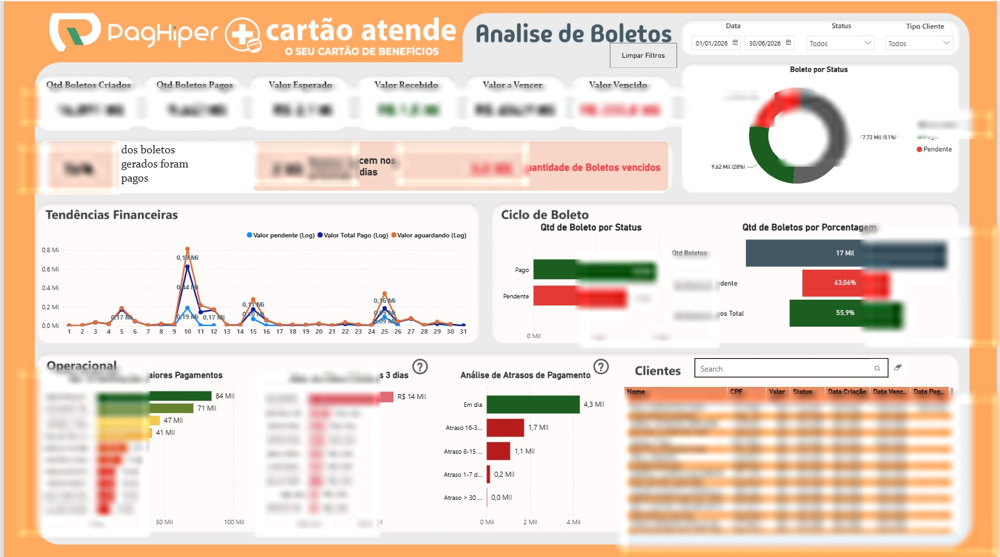
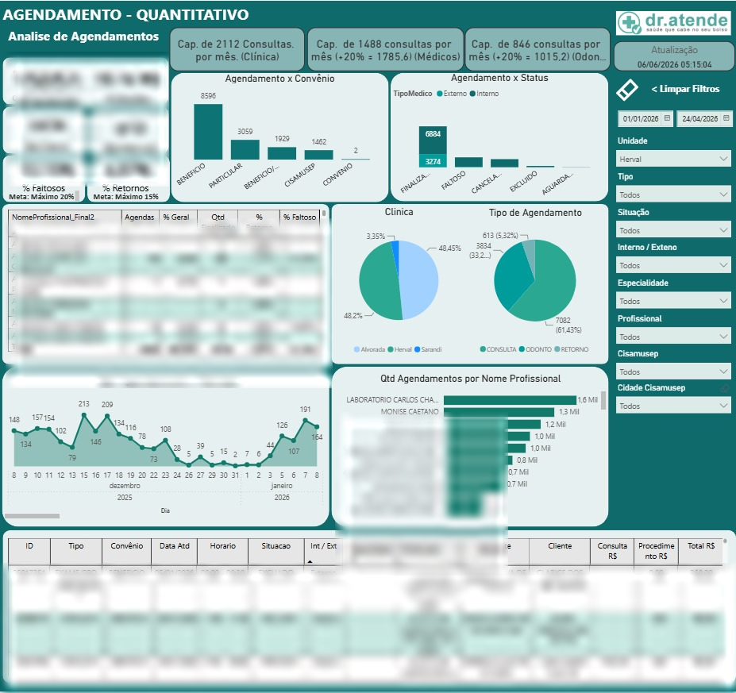
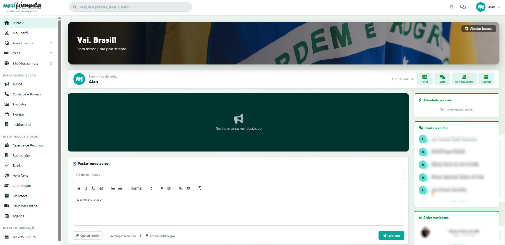
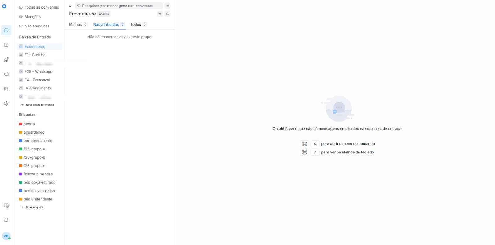

Analista de Dados e Desenvolvedor de Sistemas com experiência prática em automação, integrações via API e criação de soluções digitais do zero. Atuo na Medformula e Dr. Atende desenvolvendo pipelines de dados em Python, dashboards no Power BI e automações que transformam processos operacionais em rotinas eficientes.
Implantei e configurei o ChatWoot como plataforma de atendimento omnichannel para a empresa, substituindo a ferramenta anterior (Ialui) — integrando WhatsApp via GupShup, construindo o chatbot, os fluxogramas de atendimento e a distribuição para múltiplas equipes e unidades. Também integrei o gateway Payer ao ChatWoot, viabilizando pagamentos por PIX, cartão e boleto direto no fluxo da conversa.
Tecnologias que uso no dia a dia para extrair valor dos dados e construir sistemas
Dados & BI
Power BIDAXSQLPandasETL / ELT
Programação & APIs
PythonREST APIWebhookPostman
Atendimento & Pagamentos
ChatWootWhatsApp APIGupShupPayerPIX
Cloud & Infra
AWSAzureOracle CloudDockerGit
Power BI · Painéis reaisDados borrados por confidencialidade


Dados e sistemas que geram resultados
Ofereço projetos de ponta a ponta: da coleta de dados via API e ETL em Python à entrega de dashboards no Power BI, passando pela criação de chatbots, automações WhatsApp e sistemas web completos.
Extração e tratamento de dados via API, pipelines ETL com Python, dashboards no Power BI e automações operacionais. Configuração e implantação do ChatWoot como plataforma de atendimento omnichannel (substituindo o Ialui), com integração WhatsApp via GupShup, chatbot, fluxograma de atendimento e distribuição por times e unidades. Desenvolvimento de automação em Python para confirmação de produtos via WhatsApp.
2024 — 2025
Desenvolvedor — Acadevo (Projeto próprio)
Desenvolvimento completo do sistema de gestão de academia Acadevo, hoje em produção e operante. Funcionalidades: gestão de alunos, planos, pagamentos, frequência e relatórios. Disponível em acadevo.com.br.
31/03/2025 — 10/04/2025
Trabalho voluntário como Analista de Dados e Automação
Automação de processos no Google Sheets para eliminar tarefas repetitivas e criação de uma lista de chamadas com backup automatizado.
20/03/2025 — 20/06/2025
Hackathon Unicesumar + Google
Desenvolvimento em grupo de um projeto de sustentabilidade no agronegócio.
17/03/2025
10ª Maratona CiberEducação Cisco Brasil
Curso de Defesa de Rede na UTFPR.
Certificações
AWS Certified Cloud Practitioner
AZ-900: Microsoft Azure Fundamentals
Oracle Cloud Certified Foundations Associate
Projetos


Intranet · Medfórmula
Atendimento & Automação Medfórmula — ChatWoot, Payer, IA & Intranet
Estruturei o ecossistema de atendimento e automação da Medfórmula: implantei o ChatWoot omnichannel (substituindo o Ialui) com WhatsApp via GupShup, chatbot e distribuição multiunidade; integrei o gateway Payer para pagamentos (PIX, cartão, boleto) direto na conversa; adicionei IA de atendimento com nota e transcrição automática; desenvolvi a automação em Python de confirmação de pedidos via WhatsApp (taxa acima de 90%); além de atuar na intranet corporativa (comunicação interna, avisos, chat e produtividade).
Sistemas de Agendamento Online — Cartão Atende & Dr. Atende
Duas plataformas reais em produção: o agendamento de beneficiários do Cartão Atende (com validação de cobertura por plano) e o agendamento particular do Dr. Atende Maringá. Mesmo fluxo enxuto começando pelo CPF, com confirmação e lembretes automáticos via WhatsApp pelo ChatWoot — adaptado para cada público.
Sistema web completo desenvolvido do zero — controle de alunos, planos, mensalidades, check-in, agenda de aulas e dashboard com KPIs em tempo real. Atualmente em produção e operante em acadevo.com.br.
Múltiplos painéis executivos desenvolvidos para Medformula, Dr. Atende e Cartão Atende — análise de atendimentos, receita, conversão e performance operacional.
Power BIDAXSQLPython
Pipelines ETL & Integrações API
Automações de extração, tratamento e carga de dados para os sistemas internos das empresas do grupo, conectando APIs de terceiros a bancos de dados e BIs.
PythonPandasREST APIPostgreSQL
Atendimento & Automação Medfórmula — ChatWoot, Payer, IA & Intranet
Contexto
A empresa utilizava o Ialui como ferramenta de chat interno, mas com o crescimento das operações e a chegada de múltiplas unidades, a plataforma começou a mostrar limitações: falta de controle granular sobre filas, ausência de um chatbot configurável e dificuldade para segmentar os atendimentos por time. A missão foi migrar para o ChatWoot e montar do zero toda a estrutura de atendimento.
O que foi implementado
Fiz a instalação e configuração completa do ChatWoot, conectei o canal de WhatsApp da empresa através da API do GupShup — o que envolveu configurar a conta no painel do GupShup, registrar o número no WhatsApp Business, gerar as credenciais e apontar o webhook corretamente para o ChatWoot receber e enviar mensagens em tempo real.
Com o canal funcionando, estruturei os times por área (Vendas, Suporte, Agendamento) e configurei a distribuição automática de conversas para cada equipe de acordo com o fluxo da mensagem. Para cada unidade da empresa foi criada uma caixa de entrada separada, mantendo os atendimentos isolados e rastreáveis.
O passo seguinte foi construir o chatbot com fluxograma de atendimento: mapeei os casos mais frequentes (confirmação de agenda, dúvidas sobre horários, direcionamento de novos clientes), montei os fluxos de resposta automática e configurei as regras de escalonamento para atendente humano quando necessário. O bot passou a enviar mensagens de confirmação de agendamentos automaticamente, eliminando boa parte do trabalho manual da equipe.
Dificuldades enfrentadas
A maior dor foi a configuração do webhook entre GupShup e ChatWoot. A documentação do GupShup nem sempre é clara sobre os headers esperados e o formato exato do payload, então precisei usar o Postman para interceptar e comparar as requisições até o handshake funcionar corretamente. Outro ponto crítico foi o delay de entrega das mensagens em horários de pico — resolvido ajustando os timeouts e habilitando filas no servidor. A configuração das permissões por time também exigiu várias iterações, já que cada unidade tinha necessidades diferentes de visibilidade sobre as conversas.
Integração com meios de pagamento (Payer)
Em cima da estrutura do ChatWoot, integrei o gateway Payer ao fluxo de atendimento. Quando o paciente finaliza um agendamento ou confirma uma compra na conversa, o sistema dispara automaticamente um link de pagamento — PIX, cartão de crédito ou boleto — gerado via API do Payer. O webhook de retorno cai direto no ChatWoot, marca a conversa como paga, envia o recibo para o cliente e libera o próximo passo do atendimento. Toda a baixa financeira acontece sem ninguém precisar tocar em planilha.
IA de atendimento (nota e transcrição)
No mesmo fluxo do ChatWoot adicionei uma camada de IA de atendimento que gera automaticamente a nota/resumo de cada conversa e a transcrição dos atendimentos — facilitando o histórico, a passagem de bastão entre atendentes e a análise da qualidade do atendimento, sem ninguém precisar resumir conversa manualmente.
Automação de confirmação de pedidos (Python)
Para a operação de e-commerce da Medfórmula, desenvolvi uma automação em Python que lê os pedidos pendentes, monta mensagens personalizadas e envia a confirmação via WhatsApp pela API do GupShup. O cliente responde SIM/NÃO e o bot interpreta a resposta (com normalização de texto), respeitando o rate limiting da API com uma fila e tratando o formato dos números. O processo que levava horas de ligação passou a rodar em minutos, com taxa de confirmação acima de 90%.
Intranet corporativa
Também atuo na intranet da empresa — o portal interno de comunicação e produtividade (avisos, contatos e ramais, eventos, enquetes, reserva de recursos, requisições, chat interno e agenda) que centraliza a operação do time no dia a dia.
Resultado
O time de atendimento passou a operar com visibilidade total das conversas, histórico centralizado e distribuição automática. O chatbot reduziu significativamente o volume de mensagens repetitivas tratadas manualmente e o tempo médio de primeira resposta caiu de forma expressiva. Com o Payer integrado, o ciclo de cobrança e confirmação também passou a ser executado dentro da própria conversa do WhatsApp.
Tecnologias: ChatWoot · Payer (gateway de pagamento) · IA de atendimento (nota e transcrição) · Python · WhatsApp Business API · GupShup · PIX · Webhook · Postman · Intranet corporativa · Múltiplas unidades
Sistemas de Agendamento — Cartão Atende & Dr. Atende Maringá
Contexto
O grupo atende dois públicos com necessidades diferentes: os beneficiários do Cartão Atende (cartão-benefício de saúde, com cobertura por plano) e os pacientes particulares do Dr. Atende Maringá (sem convênio, pagam direto). Antes, todo agendamento passava pela central por telefone — o atendente verificava cobertura ou disponibilidade na planilha e retornava com horários. Isso virou gargalo conforme as duas operações cresceram.
O que foi construído
Duas plataformas com a mesma DNA — fluxo enxuto começando pelo CPF, escolha de especialidade/profissional/horário e confirmação automática pelo WhatsApp — mas customizadas para cada operação:
Beneficiário — agendamento.cartaoatende.com.br: identifica o beneficiário pelo CPF, valida a cobertura do plano em tempo real e mostra apenas as especialidades cobertas. Sem cobrança no fluxo — o plano já cobre.
Particular — agendamento.odratendemaringa.com.br: mesmo passo a passo, mas sem o filtro de cobertura. O paciente escolhe profissional, horário e finaliza o agendamento direto.
Os dois sistemas conversam com o ChatWoot por webhook: assim que o agendamento é fechado, a conversa é criada, o paciente recebe a confirmação no WhatsApp e os lembretes automáticos 24h e 1h antes da consulta saem sem ninguém precisar puxar lista.
Dificuldades enfrentadas
No fluxo do beneficiário, a parte mais delicada foi a matriz de regras de cobertura: cada plano tem uma combinação diferente de especialidades cobertas, com coparticipação ou fora da cobertura. Modelei isso de forma dinâmica para que o front exibisse só o que o usuário pode agendar — sem ele tentar e levar erro. Outro ponto crítico foi a sincronização das agendas: vários profissionais atendem em mais de uma unidade, então uso lock otimista no banco e validação no submit para impedir agendamento concorrente no mesmo slot.
Resultado
Tanto a operação de benefício quanto a particular passaram a fechar agendamento em minutos, direto pelo site. O volume de ligação para a central caiu drasticamente, a taxa de no-show diminuiu (lembrete automático no WhatsApp) e a equipe da recepção pôde focar em atendimento presencial em vez de ficar reagendando.
Tecnologias: SPA · API REST · ChatWoot · WhatsApp API · Webhook · LGPD · Validação de cobertura por plano · Lock otimista
Acadevo — Sistema de Gestão de Academia
Contexto
O Acadevo nasceu de uma necessidade real: academias de menor porte não tinham acesso a sistemas de gestão acessíveis e completos — ou pagavam caro por plataformas cheias de funcionalidades que não usavam, ou controlavam tudo em planilhas e papel. Decidi construir do zero uma solução enxuta, funcional e com foco na rotina do gestor de academia.
O que foi construído
O sistema cobre o ciclo completo de operação: cadastro e gestão de alunos, controle de planos e vencimentos com alertas automáticos de inadimplência, registro de check-in por frequência, agenda de aulas e horários, relatórios financeiros por período e um dashboard com os KPIs principais da academia — alunos ativos, receita do mês, aulas do dia e taxa de retenção.
Todo o sistema foi desenvolvido pensando em responsividade, para que o dono da academia consiga usar no celular ou no computador da recepção sem perder nenhuma funcionalidade.
Dificuldades enfrentadas
Um dos pontos mais desafiadores foi a lógica de controle de planos: precisava lidar com planos mensais, trimestrais e anuais de forma consistente, calcular datas de vencimento corretamente considerando meses com dias diferentes, gerar cobranças proporcionais em casos de adesão no meio do mês e emitir alertas no momento certo sem sobrecarregar o sistema com verificações desnecessárias.
Levar o sistema para produção real também trouxe desafios que o desenvolvimento local não antecipou: performance em consultas que crescem com o volume de alunos, tratamento de sessões simultâneas na recepção e garantia de que nenhuma atualização de código quebrasse dados já cadastrados.
Resultado
O Acadevo está em operação em acadevo.com.br e sendo utilizado por academias reais no dia a dia — o que exige estabilidade, manutenção contínua e evolução constante baseada no feedback dos usuários.